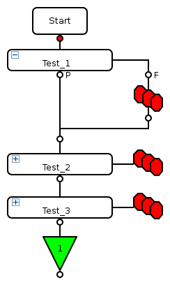
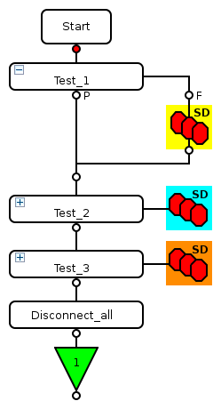
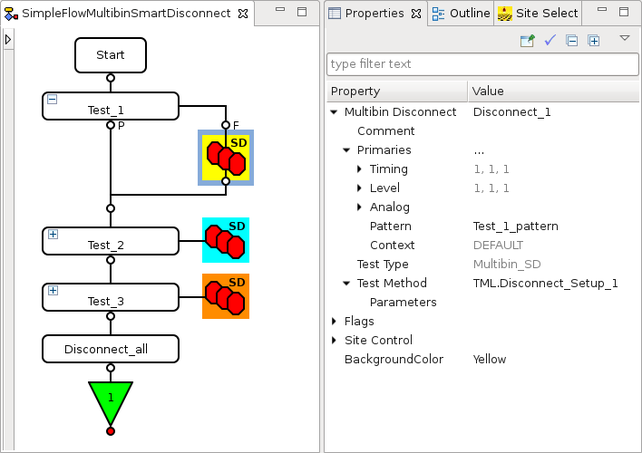

Multibin SmartDisconnect test suite
The Multibin SmartDisconnect test suite is a combination of a multibin node and a user defined test suite. Like a multibin node, the Multibin SmartDisconnect test suite is inserted into the fail branch of a Run and Branch test suite. A custom disconnect sequence adapted to the needs of the failed test suite can be implemented using test method APIs or SmartRDI-based code.
- requires interpreting or programming firmware commands or
- provides only one disconnected sequence or one huge piece of code that has to handle the different hardware setups for all Run and Branch test suites.
- The test method of a Multibin SmartDisconnect test suite can be set up using test method APIs or SmartRDI based code.
- In contrast to the Special test suite bin_disconnect, individual test method classes for each Multibin SmartDisconnect node are supported. Each of these test method classes needs to cover only the disconnect sequence for the related Run and Branch test suite.
- For simple setups, multiple Multibin SmartDisconnect nodes can reuse the same test method class for disconnecting failed sites.
- For easy handling, the site mask is already inverted when entering the run() function of the test method: Only sites are active for which the associated Run and Branch test suite has failed. The site mask is reset automatically to the still passing sites when leaving the Multibin SmartDisconnect test suite.
-
DC events are enabled only on sites that are active in the fail branch while the Multibin SmartDisconnect test method is running. DC events are reset to the old state and are performed on all sites after the Multibin SmartDisconnect test suite.
- Also for easy handling, a SmartCalc synchronization is performed before the Multibin SmartDisconnect test method is executed to collect all results and to ensure that no threads are running for failing and disconnected sites.
| Flow using only multibin nodes: | Flow using Multibin SmartDisconnect nodes: | ||
 |
 |
||
Rules and recommendations
- You must always add a test suite to the end of the testflow to apply a disconnect sequence
adapted to the needs of the passed sites.
If a Multibin SmartDisconnect test suite is assigned to the previously executed Run and Branch node, you can reuse the assigned test method class for the final disconnect.
-
For a clean approach, we recommend using only the Multibin SmartDisconnect test suite.
Do not mix the Multibin SmartDisconnect test suite with legacy solutions such as the Special test suite bin_disconnect, or User-defined disconnect sequence.
Example
Properties of a Multibin SmartDisconnect test suite
The Multibin SmartDisconnect test suite is a combination of a multibin node and a test suite and therefore offers properties that are typical for a test suite:

Functional changes
- Introduced in SmarTest 7.6.1